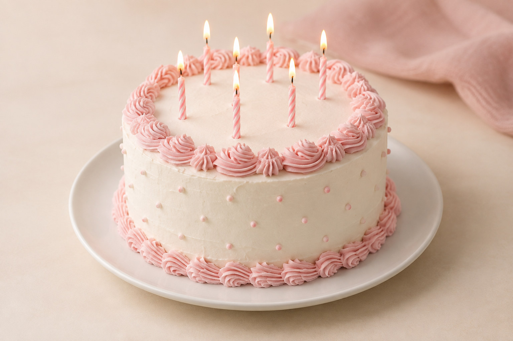

01
01
TRADICIÓN
La tradición de compartir una torta
Un cumpleaños, un reencuentro o una buena noticia: siempre hay un motivo para sentarse juntos.
Leer historia ↗HISTORIAS Y RECETAS
Ideas para celebrar y una mirada a los sabores que nos acompañan.
01
TRADICIÓN
Un cumpleaños, un reencuentro o una buena noticia: siempre hay un motivo para sentarse juntos.
Leer historia ↗
02INSPIRACIÓN
Elige sabores, piensa en tus invitados y crea un momento que se sienta tuyo.
Leer artículo ↗PARA PREPARAR EN CASA
Aprende a preparar una torta tres leches con este video de Recetas Nestlé CL.
La reproducción requiere conexión a internet.
Ver la receta en YouTube ↗